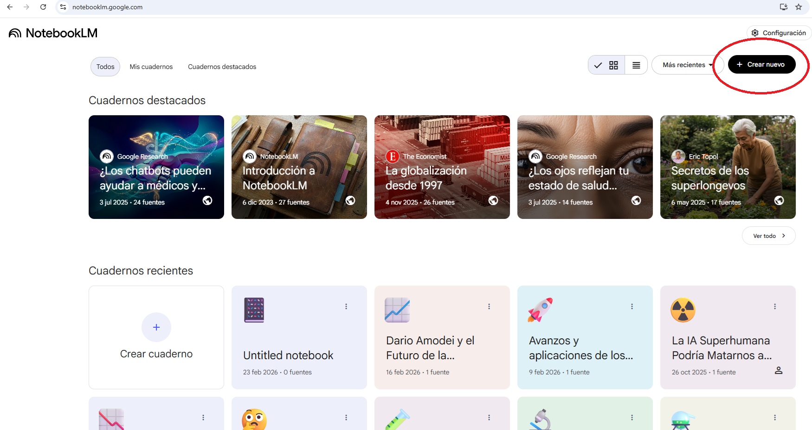
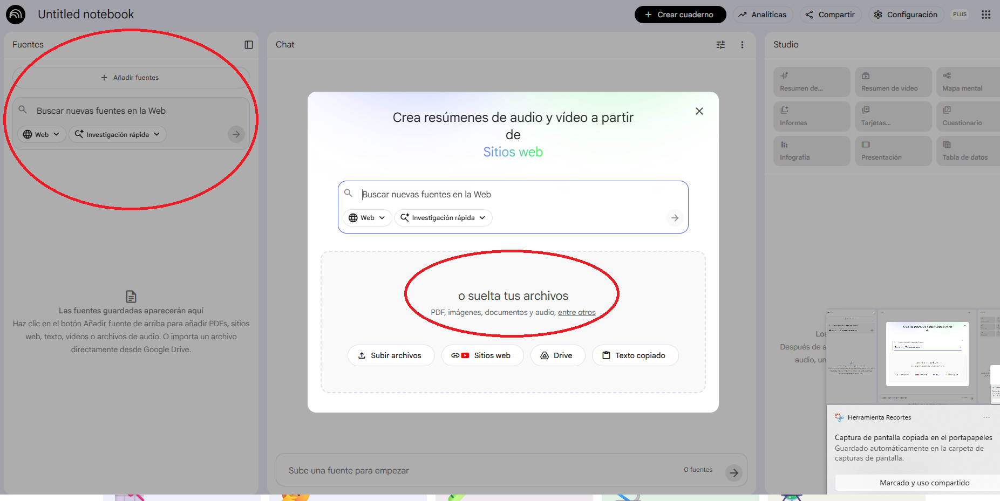
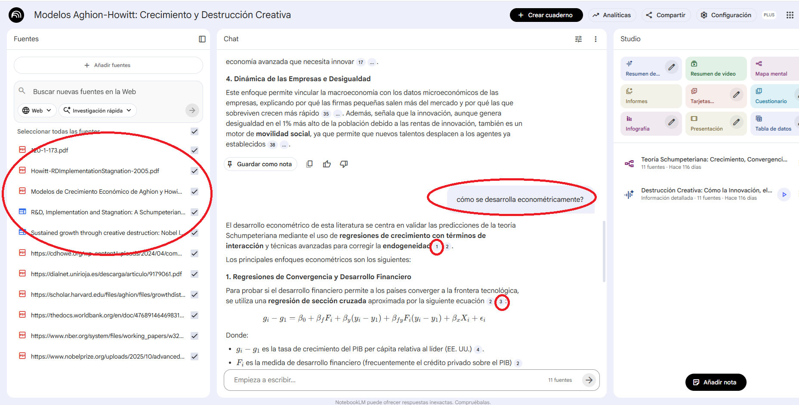
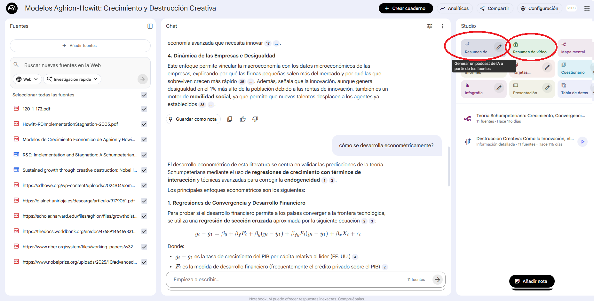
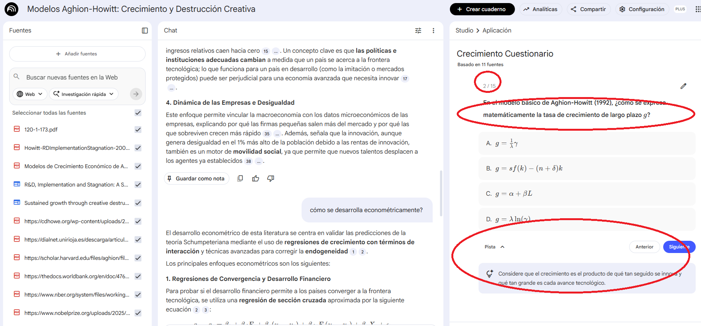
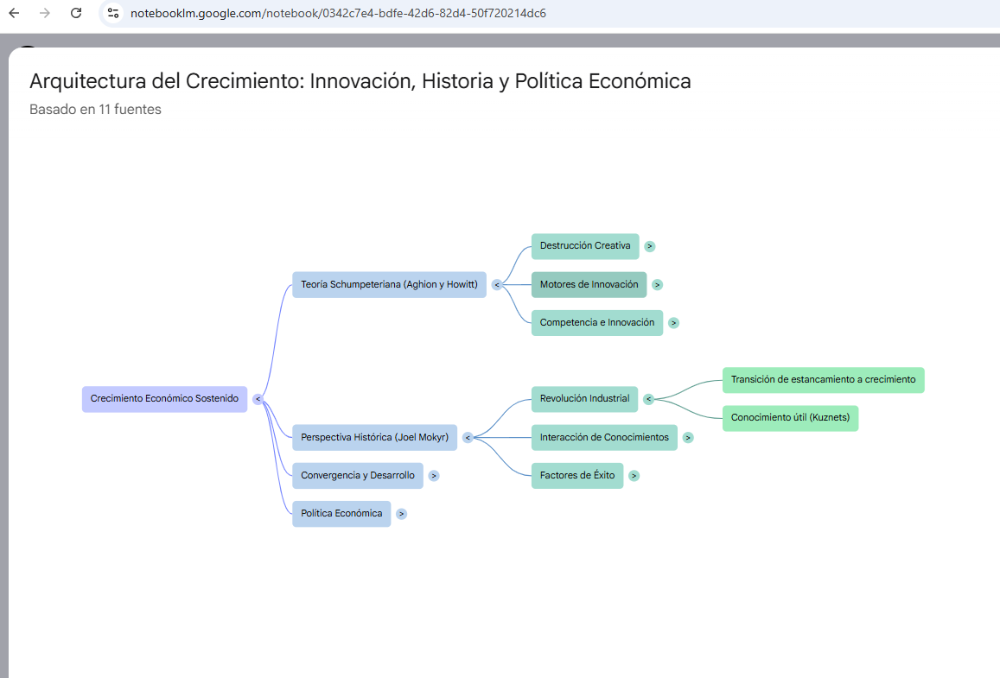

🎯 ¿Qué es NotebookLM?
NotebookLM es una herramienta gratuita de Google que te permite crear una base de conocimiento interactiva a partir de tus propios documentos. Subes PDFs, páginas web, vídeos de YouTube o textos, y la IA te permite interrogar esas fuentes, generar resúmenes, crear quizzes, mapas mentales, presentaciones e incluso podcasts profesionales generados por IA.
- Gratuito y sin límites relevantes para uso académico
- No alucina: solo responde con lo que hay en tus documentos
- Cita siempre sus fuentes: puedes verificar cada afirmación
- Podcasts sorprendentemente buenos: genera conversaciones de audio profesionales
- Muchos estudiantes ya lo usan como espacio de trabajo de clase
🚀 Guía paso a paso
Accede a NotebookLM
Ve a notebooklm.google.com e inicia sesión con tu cuenta de Google. Si es tu primera vez, verás una pantalla de bienvenida. Haz clic en «Crear notebook» (o «New Notebook»).

Agrega fuentes a tu notebook
NotebookLM acepta varios tipos de fuentes. Sube al menos 3-5 para obtener resultados ricos:
Tipos de fuentes disponibles
| Tipo | Cómo agregarlo | Uso recomendado |
|---|---|---|
| Arrastra el archivo o usa el botón «Upload» | Artículos académicos, informes, capítulos de libro | |
| Página web | Pega la URL en el campo de «Website» | Artículos de prensa, posts de blog, datos de organismos |
| Vídeo de YouTube | Pega la URL del vídeo | Conferencias, charlas TED, tutoriales |
| Google Docs | Selecciona desde Google Drive | Tus propios apuntes, borradores |
| Texto copiado | Pega directamente en «Copied text» | Fragmentos de textos, notas rápidas |

Explora el chat: pregunta sobre tus fuentes
Una vez cargadas las fuentes, usa el chat para interrogarlas. NotebookLM responderá solo con información de tus documentos y citará la fuente exacta. Prueba con preguntas como:
- «¿Cuáles son las principales conclusiones de cada artículo?»
- «Compara las metodologías utilizadas en estos papers»
- «¿Qué gaps de investigación se identifican?»
- «Resume los puntos de acuerdo y desacuerdo entre los autores»
- «¿Qué datos empíricos aporta cada fuente?»

Genera un podcast de audio o un vídeo explicativo
Esta es una de las funciones más sorprendentes de NotebookLM. Genera un podcast con dos voces que discuten el contenido de tus fuentes de forma natural y profesional, o un vídeo donde se explica el contenido con diapositivas.
- Busca la sección «Resumen de audio» y «Resumen de vídeo» en el panel de herramientas
- Haz clic en «Generarar»
- Espera unos minutos mientras se genera el audio o el vídeo
- Escucha el resultado: dos «presentadores» discuten tu tema
- Ve la presentación: las diapositivas llevan una explicación sincronizada

Crea un quiz interactivo
NotebookLM puede generar cuestionarios basados en tus fuentes. Ideal para autoevaluación o para preparar materiales de clase.
- En el panel de herramientas, busca la opción de «Quiz»
- Selecciona las fuentes sobre las que quieres el quiz
- El sistema generará preguntas con respuestas verificables

Genera un mapa mental o presentación
Explora las demás herramientas de generación de NotebookLM:
- Mapa mental: visualiza las relaciones entre conceptos de tus fuentes
- Presentación: genera slides con los puntos clave
- Resumen estructurado: tabla de contenidos del conocimiento en tus fuentes
- Línea temporal: si tus fuentes tienen contenido cronológico

💭 Ideas de uso para docencia
- Crea un notebook con las lecturas obligatorias de tu asignatura
- Los estudiantes pueden interrogar los textos para preparar clases
- Genera podcasts como material complementario para cada tema
- Crea quizzes de autoevaluación para cada bloque temático
- Úsalo como base para debates: «¿en qué no están de acuerdo estos autores?»